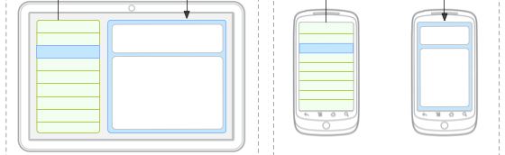
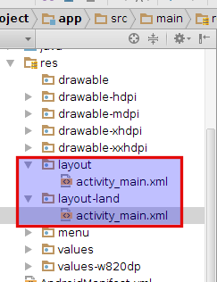
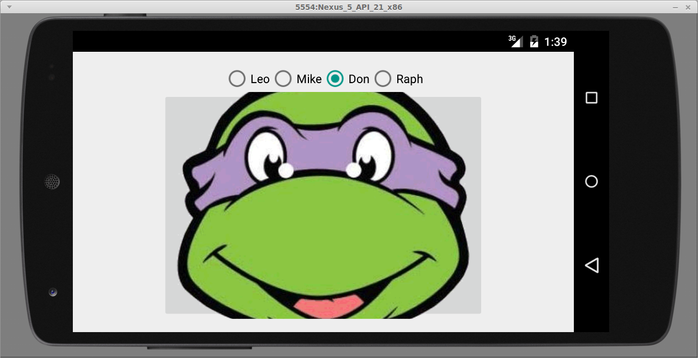
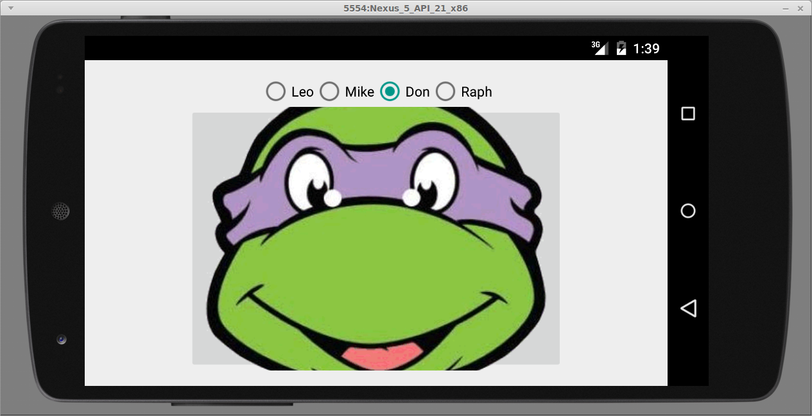
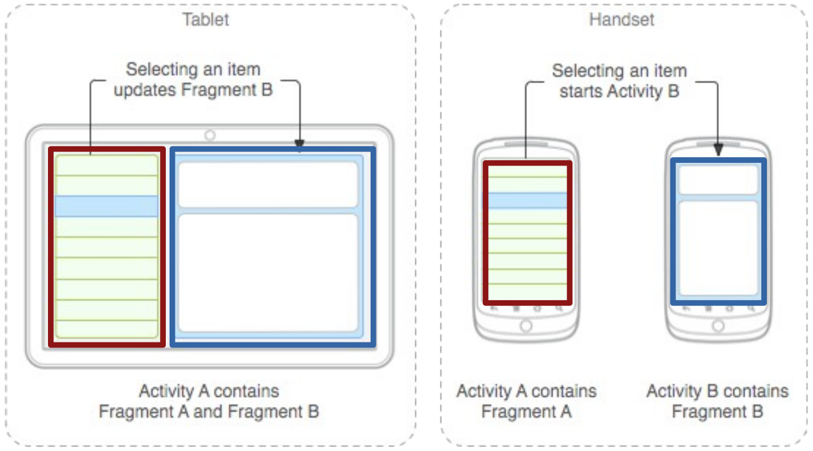
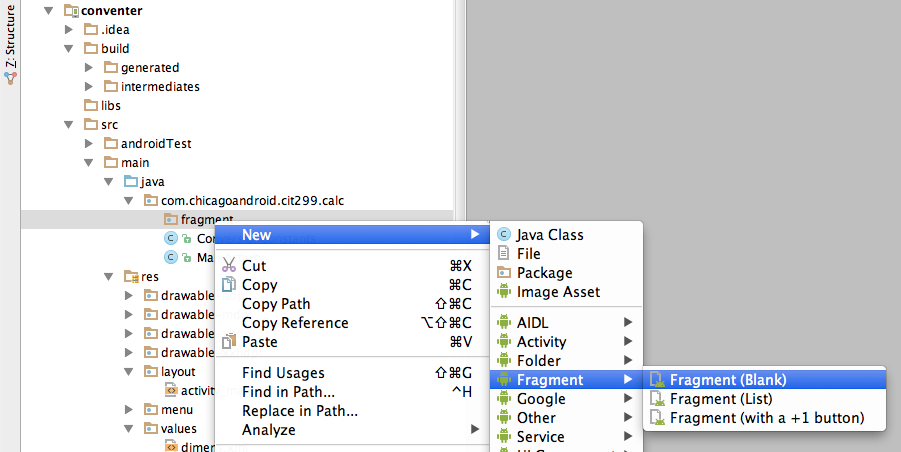
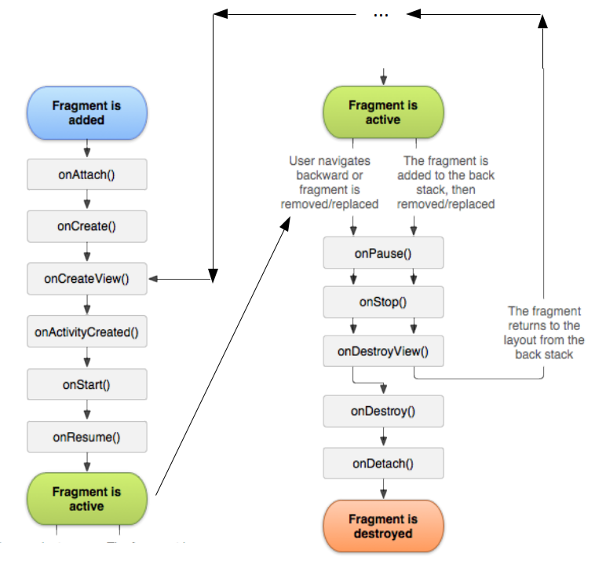
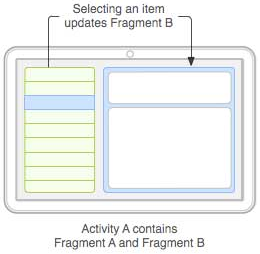
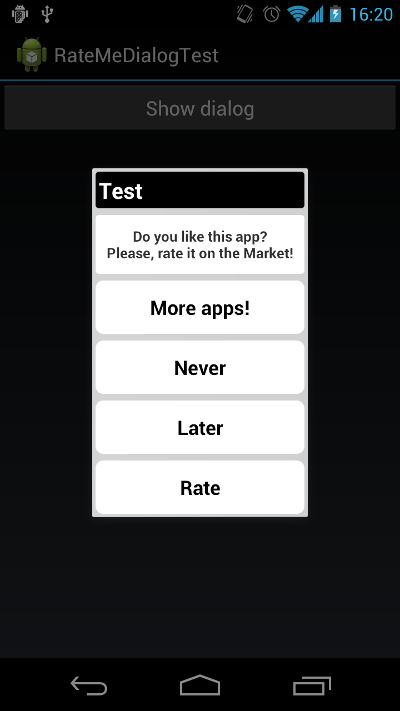
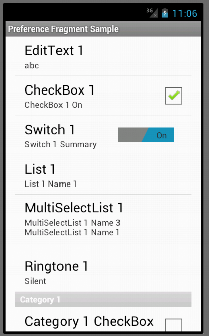

Situational layouts
- Your app can use different layout in different situations:
- different device type (tablet vs phone vs watch)
- different screen size
- different orientation (portrait vs. landscape)
- different country or locale (language, etc.)

Situation-specific folders

- Your app will look for resource folder names with suffixes:
Portrait vs landscape layout
- To create a different layout in landscape mode:
- create a folder in your project called res/layout-land
- place another copy of your activity's layout XML file there
- modify it as needed to represent the differences
- when phone is rotated, activity reloads itself with layout-land version

Stop rotation layout reload
- A quick way to retain your activity's GUI state on rotation is to set the
configChangesattribute of the activity in AndroidManifest.xml.- Won't reload layout from layout-land folder
<!-- AndroidManifest.xml -->
<activity android:name=".MainActivity"
android:configChanges="orientation|screenSize"
...>
 

Checking orientation in Java
- Sometimes the Java code of your activity wants to behave differently in each orientation.
- You can check the orientation with the following code:
if (getResources().getConfiguration().orientation ==
Configuration.ORIENTATION_PORTRAIT) {
// we are in portrait orientation
...
}
if (getResources().getConfiguration().orientation ==
Configuration.ORIENTATION_LANDSCAPE) {
// we are in landscape orientation
...
}
Lib: Checking orientation
- You can check the orientation with the following code:
if (isPortrait()) {
// we are in portrait orientation
...
}
if (isLandscape()) {
// we are in landscape orientation
...
}
Problem: redundant layouts
- With situational layout you begin to encounter redundancy.
- The layout in one case (e.g. portrait or medium) is very similar to the layout in another case (e.g. landscape or large).
- You don't want to represent the same XML or Java code multiple times in multiple places.
- You sometimes want your code to behave situationally, e.g.
- In landscape mode, clicking a button should modify an existing view.
- In portrait mode, clicking a button should launch a new activity.
Fragments
- fragment: A reusable segment of Android UI that can appear in an activity.
- can help handle different devices and screen sizes
- can reuse a common fragment across multiple activities
- first added in Android 3.0 (usable in older versions if necessary)

Creating a fragment
- In Android Studio, right-click app, click:
New → Fragment → Fragment (blank)
- un-check boxes about "Include __ methods"
- now create layout XML and Java event code as in an Activity

Using fragments in activity XML
- Activity layout XML can include fragments.
<!-- activity_name.xml -->
<LinearLayout ...>
<fragment ...
android:id="@+id/id1"
android:name="ClassName1"
tools:layout="@layout/name1" />
<fragment ...
android:id="@+id/id2"
android:name="ClassName2"
tools:layout="@layout/name2" />
</LinearLayout>
Fragment life cycle

- Fragments have a similar life cycle and events as activities.
onAttachto glue fragment to its surrounding activityonCreatewhen fragment is loadingonCreateViewmethod that must return fragment's root UI viewonActivityCreatedmethod that indicates the enclosing activity is readyonPausewhen fragment is being left/exitedonDetachjust as fragment is being deleted
Fragment life cycle

Fragment template
public class Name extends Fragment {
@Override
public View onCreateView(LayoutInflater inflater,
ViewGroup vg, Bundle bundle) {
// load the GUI layout from the XML
return inflater.inflate(R.layout.id, vg, false);
}
public void onActivityCreated(Bundle savedState) {
super.onActivityCreated(savedState);
// ... any other GUI initialization needed
}
// any other code (e.g. event-handling)
}
Fragment vs. Activity
- Many activity methods aren't present in the fragment.
- But call
getActivityto access the activity the fragment is in.Button b = (Button) findViewById(R.id.but);Button b = (Button) getActivity().findViewById(R.id.but); - Sometimes also use
getViewto refer to the activity's layout
- But call
- Event handlers cannot be attached in the XML any more. :-(
- Must be attached in Java code instead.
- Passing information to a fragment (via Intents/Bundles) is trickier.
- The fragment must ask its enclosing activity for the information.
- Fragment initialization code is different.
- Typically move
onCreatecode toonActivityCreated.
- Typically move
Fragment onClick listener
- Activity:
<Button android:id="@+id/b1"android:onClick="onClickB1" ... /> - Fragment:
<!-- in fragment's XML layout file --> <Button android:id="@+id/b1" ... />// in fragment's Java file Button b = (Button) getActivity().findViewById(r.id.b1); b.setOnClickListener(new View.OnClickListener() { @Override public void onClick(View view) { // whatever code would have been in onClickB1 } });
Activity with parameters
public class Name extends Activity {
@Override
protected void onCreate(Bundle savedInstanceState) {
super.onCreate(savedInstanceState);
setContentView(R.layout.name);
// extract parameters passed to activity from intent
Intent intent = getIntent();
int name1 = intent.getIntExtra("id1", default);
String name2 = intent.getStringExtra("id2", "default");
// use parameters to set up the initial state
...
}
}
Fragment with parameters
public class Name extends Fragment {
@Override
protected void onActivityCreated(Bundle savedState) {
super.onActivityCreated(savedState);
// extract parameters passed to activity from intent
Intent intent = getActivity().getIntent();
int name1 = intent.getIntExtra("id1", default);
String name2 = intent.getStringExtra("id2", "default");
// use parameters to set up the initial state
...
}
}
Fragment communication

- An activity can contain multiple fragments.
- The fragments can talk to each other.
- use activity's
getFragmentManagermethod - its
findFragmentByIdmethod can access any fragment that has an id - write regular methods to communicate
- use activity's
Activity act = getActivity();
if (act.getResources().getConfiguration().orientation ==
Configuration.ORIENTATION_LANDSCAPE) {
// update other fragment within this same activity
FragmentClass fragment = (FragmentClass)
act.getFragmentManager().findFragmentById(R.id.id);
fragment.methodName(parameters);
}
Re-using layout with include
<include layout="@layout/name" />
- To use a layout in multiple places without a fragment, use the
includetag in your XML. - Similar to a fragment, but without its own lifecycle and event handling behavior.
- Example (uses a hypothetical layout in content1.xml):
<!-- activity_example1.xml -->
<LinearLayout ...>
...
<include layout="@layout/content1" />
<!-- activity_example2.xml -->
<RelativeLayout ...>
...
<include layout="@layout/content1" />
Dynamically add a fragment
- You can add or remove a fragment from the screen dynamically in your activity's Java code:
getFragmentManager().beginTransaction() .add(R.id.containerID, fragment) .commit(); - Example:
// in my activity class somewhere MyFragment frag = new MyFragment(); getFragmentManager().beginTransaction() .add(R.id.mycontainer, frag) .commit(); - related methods in fragment manager:
remove,replace
Fragment subclasses
DialogFragment- Pops up on top of the current activity.ListFragment- Shows list of items as its main content.PreferenceFragment- Allows user to change app settings.


Lib: SimpleActivity
- Accessing fragments from a
SimpleActivity:Fragment myFrag = findFragmentById(R.id.theId);
| Method | Description |
|---|---|
findFragment(id) findFragmentById(id) |
return fragment with the given ID |
addFragment(containerID, |
add a new fragment into the given view as its container |
removeFragment(fragment); |
remove an existing fragment |
replaceFragment(containerID, |
replace a fragment with a new one |
hideFragment(fragment); |
make a fragment invisible |
showFragment(fragment); |
make a fragment visible |
Lib: SimpleFragment
- If your app uses fragments, you can also have your fragments extend
SimpleFragment:public class MyFragment extends Fragment {public class MyFragment extends SimpleFragment { - Not a lot of functionality yet, but currently lets you access the
SimpleActivitycontaining the fragment.SimpleActivity act = getSimpleActivity(); ...